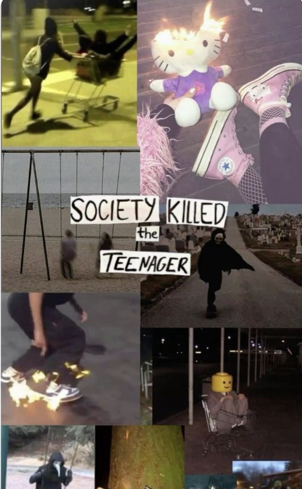
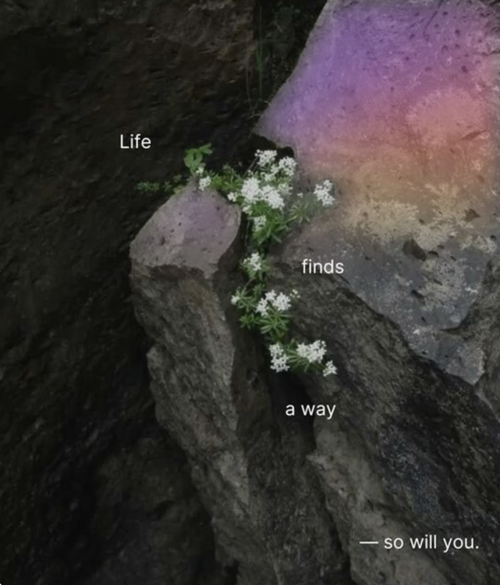
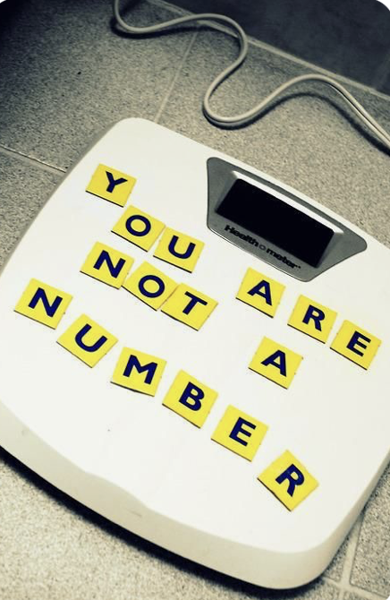
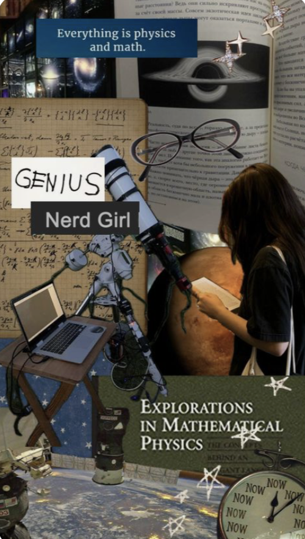

This is what really got me stressed and still scares me deeply. However, I went cold turkey on sports for over a year now and nothing drastic has happened. Not only according to myself, but dieticians and experts completely agree with taking some time off to restore your body. You are not compelled to do exercises every day, they are only meant to take your mind off other thoughts. For me, it was simply to burn calories by doing random exercises I found online. Yet, there are so many other sports that I enjoyed and forgot about - swimming, simply walking or bouldering. As long as you are not excessively doing them, they are useful only for obtaining new surviving skills or are fun.

Friends
There are no right or wrong friends, it only matters how you feel around them. If you are uncomfortable or do not find their conversations interesting, it is up to you who to talk to. The environment that surrounded me did change my opinion and behaviours. The more I talked about the topics about beauty or doing sport was the last bit of my iceberg. And honestly, when I took a break from everything, I realised that it was not my priority. None at all.
However, it is truly empowering to have one really close friend that you can rely on and look forward to seeing in the future. I personally decided to reach out to my childhood friend, and it was my best decision ever. Not only did we restore our friendship, I have that person to count on. Therefore, when it truly feels right, I encourage you to try to talk to them. In case it doesn’t go right, it will not be your fault - it would only show whether you are also important to them.

Love
There are lots of different types of love. Friendship, family and romance. And it is meant to be equal from both sides and depends on the moment. Having that one person that you want to spend your entire life with is extremely rewarding and powerful. However, you need to remain being yourself. Whether it is not working out, or having arguments - it does not define who you are. It only showcases if the both of you are in a serious relationship and willing to compromise.

"Bad Days"
If I could have a quarter for every time I had a “bad day”, I would be a millionaire. And it is not as funny. I cannot even say what might be a coping mechanism to this or how to get through. Sometimes, even the future goals are not helping to stay motivated. Perhaps, talking to a friend, even staying in complete silence, would help to feel less alone. Why I am including this - is to say that you are not alone. Whilst writing this website, I was also having bursts of motivation or unable to continue. Without these days, of course it would make life easier, however you wouldn’t be as strong. Perhaps just going through this, just continuing what you do also makes this pass. If I could, I would want to reach out and help out to everybody having a bad day, but this is what shapes us. Also, how we find the right people at the right time. Sometimes you need to wait, for a long time… but somebody already notices you. I did, even if I didn’t see you, I still considered you.

Control
Amidst of the wanting to control something in the chaos, you don't exactly have to let it go. I know I can't yet. However, what I've been told is to let other thoughts in. For example, I adore physics and the nature. Perhaps surviving for such little things might help to destroy the monster in the room. The future cannot be predicted, especially not with bad grades or poor reputation. You are a whole personality under the labels of the society. You are worth simply to open your eyes in the morning and that will be enough. Time might be the only medicine right now and I know it's painful, but you've already been through a lot. I know and I'm here.